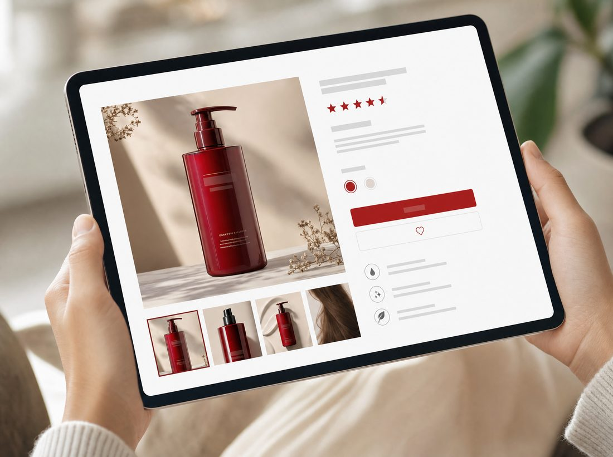
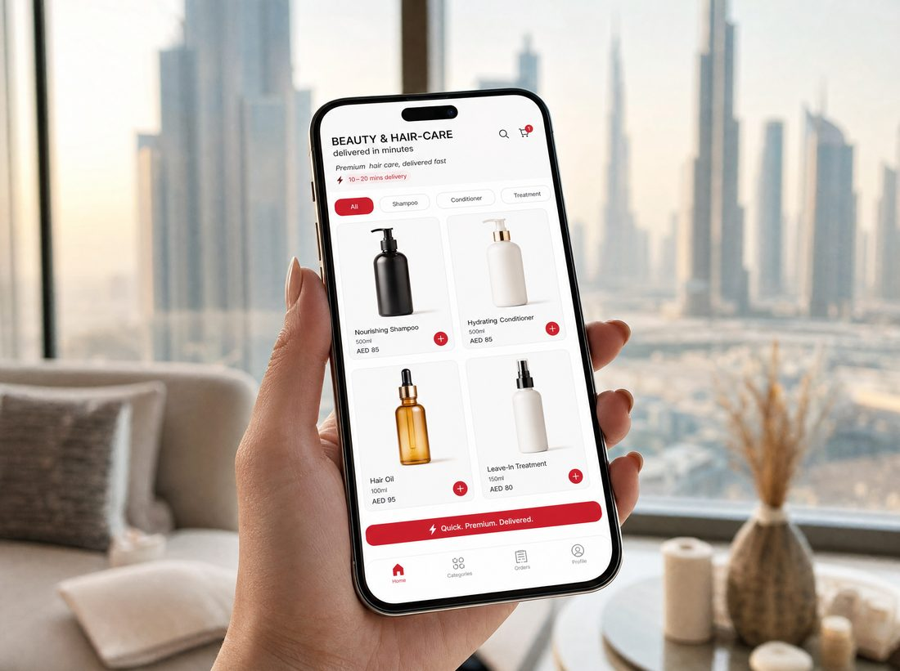

02 · Across the shelf
The same index, every channel.

Modern Trade
Repair & protect endcap, LOW/MED/HIGH swap headers, HIGH-week bundle, Frizz block compliance.

Pharmacy
"Frizz Index clinic": humidity-damage diagnostic → BC Bonacure tiers, advisor sampling, travel-mask GWP at till on HIGH weeks.

E-tail
A+ content led by the Frizz Index, auto-updating "Today's Frizz Index" badge, search bids on frizz/repair, review seeding.

Quick-commerce
Weather-triggered "Frizz Index High today" tiles, one-tap "Frizz Rescue" bundle, creator codes on worst-humidity days.

Retail media
Always-on Noon/Amazon/Carrefour sponsored + weather-API display bidding up on HIGH days. ROAS vs the index.
04